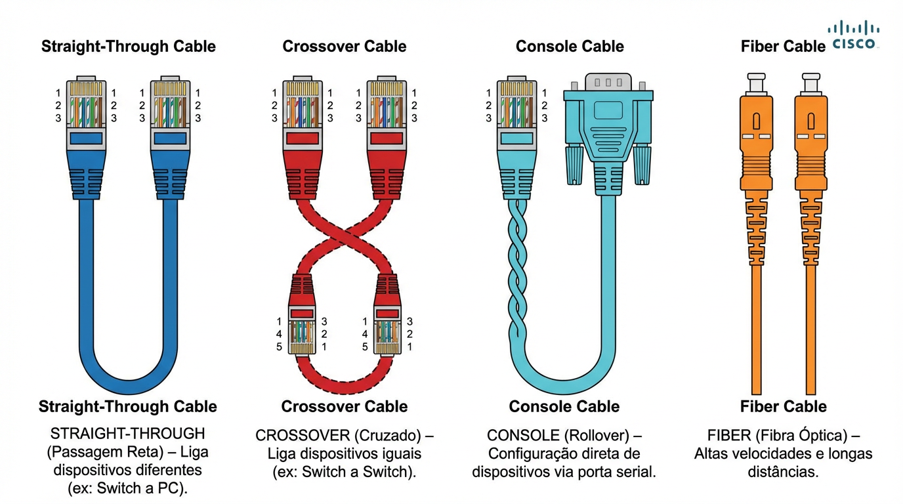

Straight-Through (Direto): Cabo padrão (linha sólida). Use para conectar dispositivos de camadas diferentes (ex: PC → Switch, Switch → Router).
Cross-Over (Cruzado): Cabo legado (linha tracejada). Use para conectar dispositivos iguais ou da mesma camada (ex: PC → PC, Switch → Switch, Router → PC).
Console (Rollover): Cabo azul claro. Exclusivo para configuração inicial via terminal (Porta RS232 do PC → Porta Console do Router/Switch).
Fiber (Fibra): Cabo laranja. Para conexões de longa distância ou uplinks de alta velocidade entre switches.
Serial (DCE/DTE): Cabo vermelho (raio). Simula conexões WAN entre roteadores em laboratório.